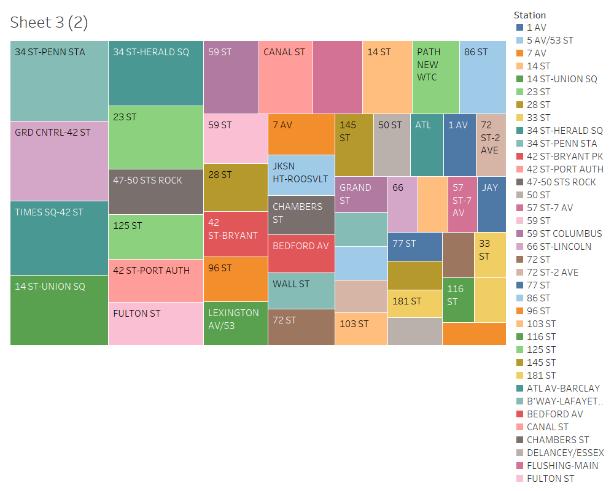
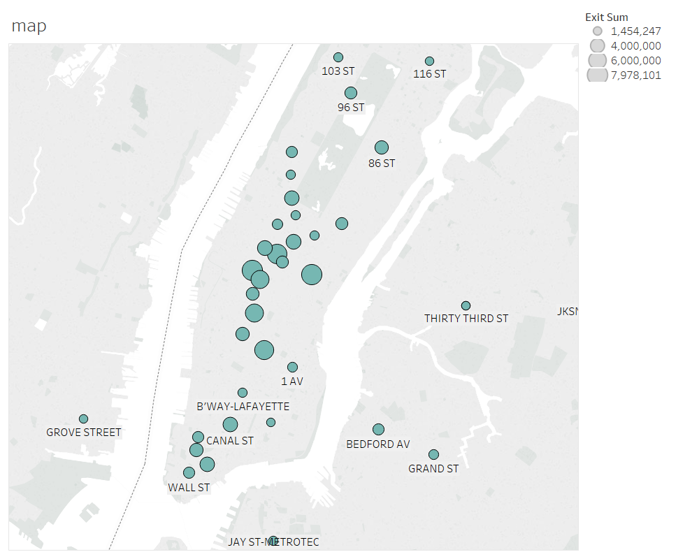
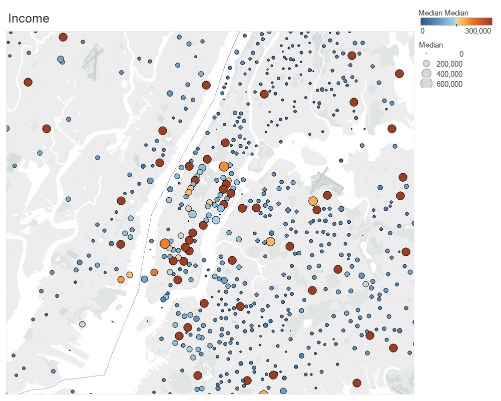
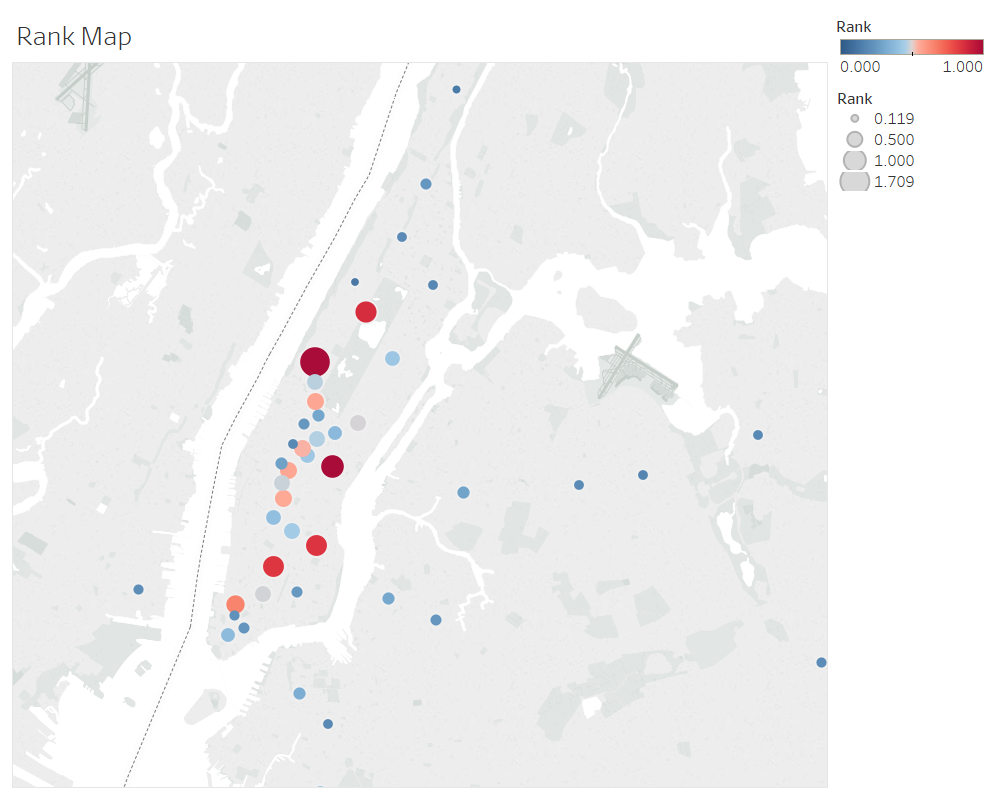
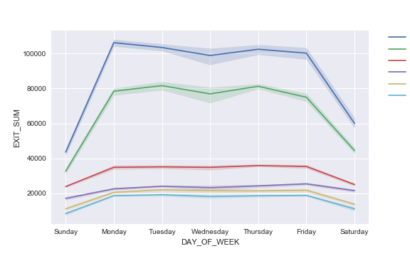

How to mine a crowd..
01 Oct 2018Takaways from Exploratory Data Analysis using NYC MTA Turnstile data
 Photo by Jamie McInall from Pexels
Photo by Jamie McInall from Pexels
Week one of the Metis Data Science Bootcamp saw us wade neck deep into analyzing data - in its full glory, and I kid you not - it was messy! But the final outcome was something, which as a rank newcomer - I was proud of!
This project was designed such that we would face the rigors of understanding the data, clean it and analyze it to come up with recommendations for a fictional client. Women Yes Women Tech (WYWT) International wanted us to analyze the MTA Turnstile data to suggest where to place their street team of volunteers to maximize sign-ups for their cause and increase attendance in their summer gala.
Now, why MTA turnstile data, you may ask.
NYC MTA turnstile data
In 2016, average weekday subway ridership was 5.7 million, the highest since 1948. Annual ridership was 1.757 billion.
Given this ridership, it should come as no surprise that the data from the turnstiles - that register the traffic through the New York subway system at each entrance of each station every four hours - would be ideal for our analysis. Given the rather low response rates (10-12%) for external surveys, identifying stations with the highest footfalls could yield a good conversion rate, i.e, more donors to WYWT’s cause.
Given that WYWT would hold their gala in summer, we pulled out the turnstile data for the months preceding it, from March to May and used it for our analysis.
Based on our cleaned-up data (maybe I should go over how we did all that in another blog post?), we came up with a list of top stations with the highest footfalls. We focussed on the number of exits from any given station, as we inferred that people would be more amenable to chatting with volunteers at their destination.
 Top MTA stations based on the turnstile Data
The income angle
 GPS locations of the top MTA stations that we selected. Larger circles indicate more foot falls.
WYWT is looking to expand on its donor base through the street campaign, so we decided to add income data from Kaggle (household income data), to supplement the footfall data and get more meaning into our analysis.
We identified the zipcodes around our top stations and mapped the income distribution around these locations.
 GPS locations of the income distribution. Darker circles indicate higher incomes.
We also devised a simple algorithm that mapped both footfall and income data into a single function, adding weights to each component so that we could tweak the recommendations towards either income heavy stations or footfall heavy stations, based on the client’s preference.
 GPS map of top ranked MTA Stations based on the combined income and turnstile data.
Our recommendations
-
List of top fifty stations based on our combined income and footfall ranking system.
-
Mondays and Fridays are the best days for positioning street teams at the exits of the stations to maximize their impact as the ridership peaks on those days.
 The turnstile data was separated by the days of the week and aggregated over the entire period of 13 weeks to give rise to the distribution of exits over the days of the week for selected stations with the shadow being the 95% confidence interval around each line plot.
Note: Wednesday traffic seem to be fluctuating more than any other day for the period we analyzed.
Next Steps
Off to week two and web scraping! Keep an eye on this blog for more updates in the coming weeks! I leave you with some interesting quotes on data from some truly learned people!
Interesting Quotes on Data
“It is a capital mistake to theorize before one has data.”- Arthur Conan Doyle, Author of Sherlock Holmes
“Torture the data, and it will confess to anything.” – Ronald Coase, winner of the Nobel Prize in Economics
The world is one big data problem.”- Andrew McAfee, MIT scientist